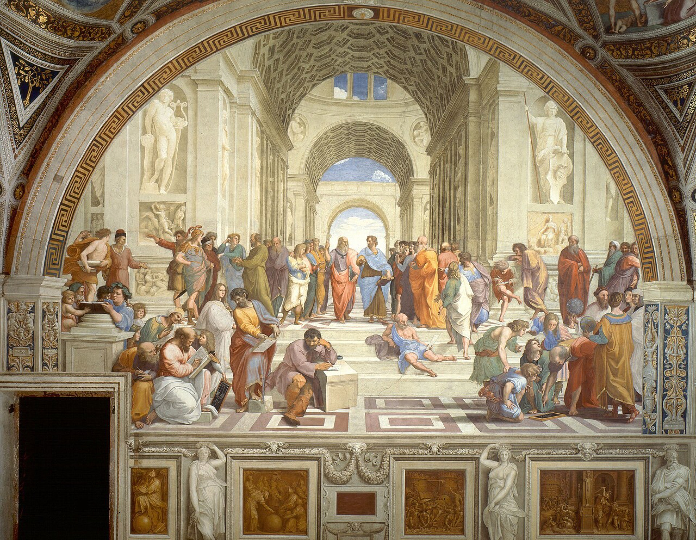
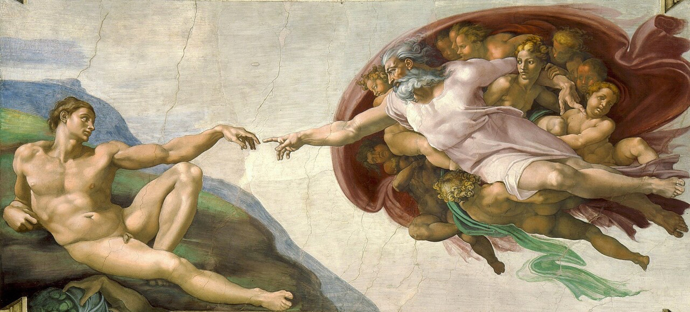
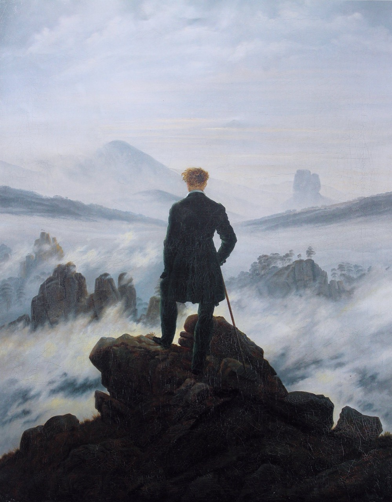
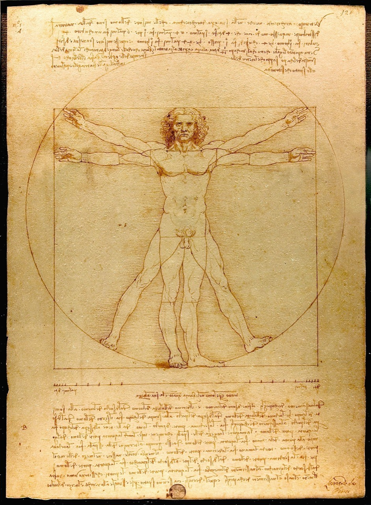
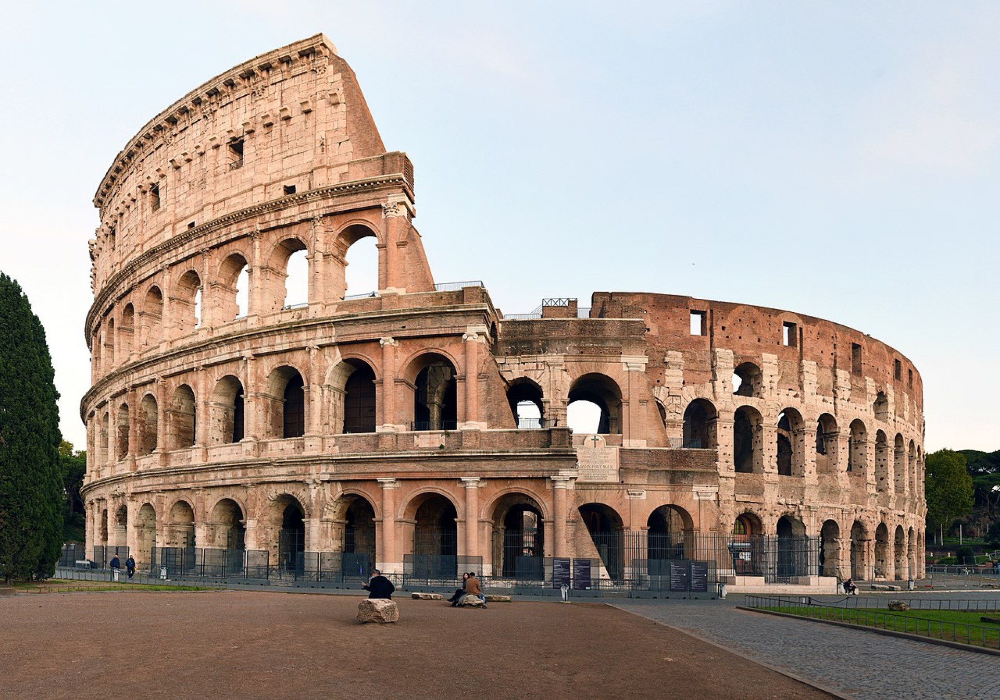

Comprendre pourquoi avant de coder comment.
Étudiant ingénieur EPITA · Ancien MPSI/MP · Spécialisation Intelligence Artificielle

Je ne code pas pour coder. Je code parce que quelqu'un souffre, parce qu'un système est inefficace, ou parce qu'un problème me fascine.
Des millions de femmes souffrent en silence d'endométriose, de SOPK, d'adénomyose ou de fibromyalgie. Le diagnostic prend en moyenne 7 ans. J'ai construit seul Hygée — du nom de la déesse grecque de la santé — une application gratuite, non-lucrative, conçue selon les principes du trauma-informed design. Chaque pixel, chaque mot, chaque interaction dit : « ta douleur est réelle, tu n'es pas seule. »
Une application web gratuite où les femmes atteintes de maladies chroniques suivent leurs symptômes au quotidien, reçoivent des analyses personnalisées, et génèrent un PDF prêt pour leur médecin.
Les marchés financiers sont le plus grand système complexe créé par l'homme. Après des centaines d'heures d'observation du marché de l'or, j'ai développé ma propre stratégie propriétaire — pas copiée, construite à force de patience et de rigueur mathématique. Le trading algorithmique, c'est de la discipline stoïcienne appliquée à la théorie des probabilités.
Un programme autonome qui surveille le marché de l'or 24h/24, détecte les opportunités selon ma stratégie mathématique, et m'alerte en temps réel sur Telegram.
La technique sans humanité est stérile. Depuis septembre 2025, je m'engage chez Vies2s où je porte plusieurs casquettes — cours de maths-physique, maraudes pour les sans-abri, organisation de repas, encadrement d'activités. Parce que les vrais problèmes ne se résolvent pas derrière un écran.
J'ai construit la plateforme web de l'association (planning, présences, suivi bénévoles, dashboard admin) et en parallèle, je donne des cours et participe aux maraudes.
Formulation d'hypothèses, modélisation Python, rapports LaTeX. UPHF Valenciennes, été 2024. Devenu mon TIPE.
Surveille mes projets d'école, alerte en cas d'oubli de push, push automatique de secours.
Entraînement spécialisé d'un LLM pour la conception de puces. Techniques QLoRA sur Apple Silicon.


Le code est un outil. Ce qui le rend puissant, c'est l'esprit qui le manie.

Si mon parcours vous intrigue ou si vous avez un projet qui mérite de la curiosité et de la rigueur, parlons-en.